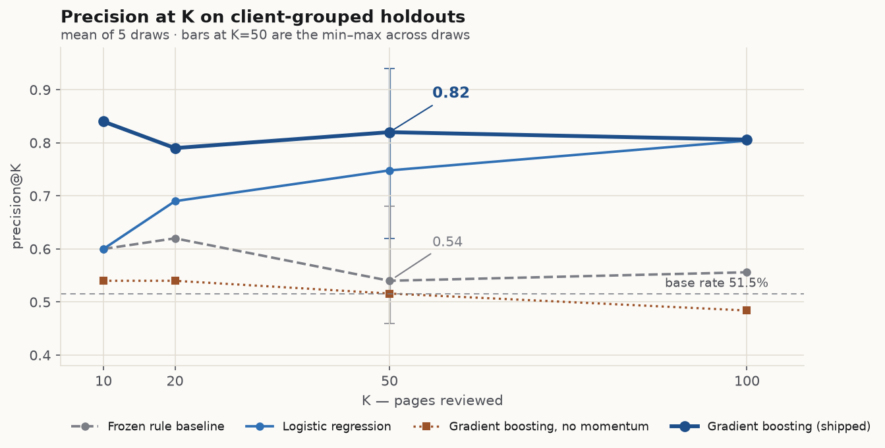
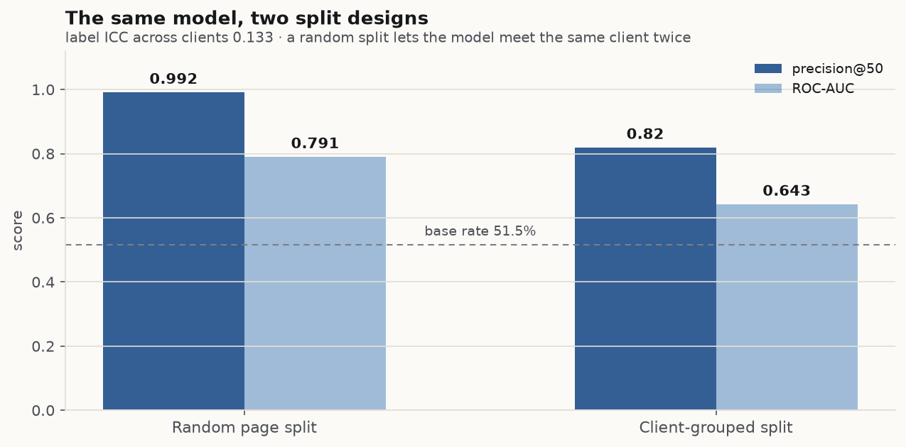
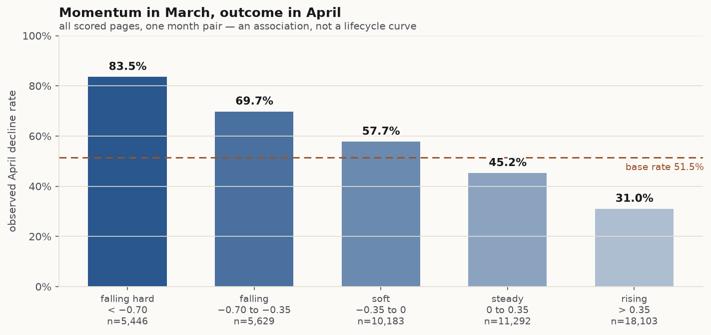
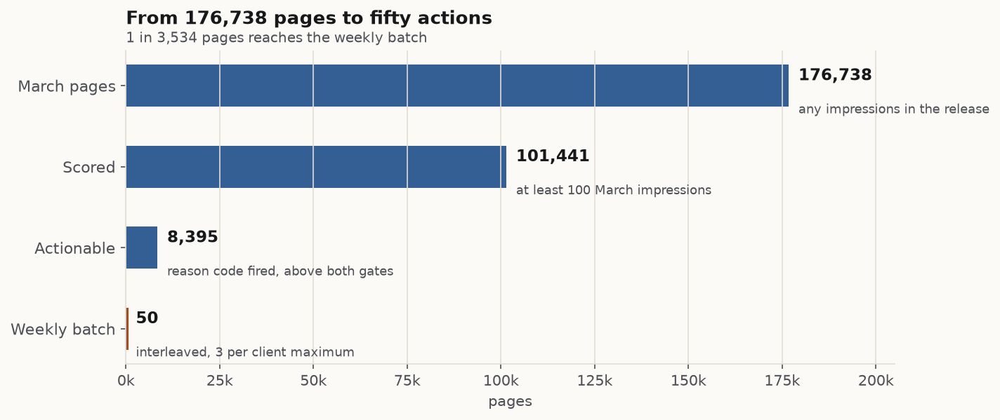

FlyRank ML Internship · Lane 4 · March–April 2026
Which pages should you review first?
An early-warning queue for organic click decline — ranked by a model, explained by rules, validated with clients held out.
- Pages scored
- 101,441of 176,738 in March
- Model precision@50
- 0.820.62–0.94 across 5 draws
- Frozen rule baseline
- 0.54same split, same pages
- Queue it produces
- 8,3958.3% of the frame is work
Abstract
Question. When a portfolio holds more content pages than a team can review, which pages are most likely to lose organic search clicks next month — and what should a person do with them? Data. One release of a pseudonymized production search warehouse (78.8 million daily fact rows, March–April 2026 windows), reduced to 101,441 content pages with at least 100 March impressions across 43 clients. Method. A page-level label (April impressions below 80% of March), eight pre-decision features, a frozen rule baseline, and a gradient-boosted model scored on clients that never appear in training, with the label taken from the following month. Result. The model reaches precision@50 of 0.82 (range 0.62–0.94 over five client-grouped draws) against 0.54 for the rule baseline on the identical split, at a 51.5% base rate; removing the momentum feature drops it to 0.516. Use. Decision support for a human review queue — the model ranks, deterministic reason codes explain and prescribe, and nothing is published automatically.
Contents
1The problem
A portfolio of content pages almost always outgrows the people who maintain it. The decision this work supports is narrow and real: which fifty pages does an editor open this week?
Picture the Monday morning version. A team has 101,441 pages that cleared a meaningful-traffic floor last month, and room to touch a few dozen of them. The spreadsheet everyone reaches for sorts by sessions. The intuition behind it is that the biggest pages carry the most risk, and the oldest pages are the tired ones.
Both intuitions are testable against the next month, and in this data both are weak or backwards. Pages in the smallest volume band declined 53.5% of the time; pages in the largest declined 44.5% — the opposite of the "protect the big pages" prior. The freshest content declined 42.1% of the time against 49.9% for the oldest bucket: a real but modest gap, and one that mixes page age with the fact that old pages have had longer to accumulate traffic.
What does separate outcomes is how a page is doing relative to its position peers — the click-through rate a page earns at its rank, compared with pages ranking nearby. That signal has a spread of 0.212 in click-through rate across 76,131 visible pages and survives as the strongest interpretable feature in the model. Momentum — impressions falling through March — turns out to be stronger still, and it is the feature the whole result depends on.
So the question sharpens. Not "which pages are big", but: given what we could see on 31 March, which pages will lose search clicks in April, and what should a person do about each one? This paper answers it in three steps — a validated ranking model, an honest comparison against a frozen rule baseline, and an action playbook that turns the ranking into reviewed work rather than automated changes.
What this paper is not
It is not a causal study. Nothing here was assigned at random, no page was changed by this work, and no number on this page says what will happen if a page is refreshed. It is a ranking study: a measurement of how well pre-decision signals order pages by what happened next, in one portfolio, over one month pair.
2Data
All numbers come from one fixed snapshot of a pseudonymized production search warehouse, released for this internship as flyrank_pseudonymized_warehouse_release_v20260703 (export date 2026-07-03; daily facts stop 2026-06-30 by design, because the freshest days are incomplete). The release holds 78.8 million daily fact rows across the portfolio, alongside one row per content item and one per client.
| Piece | Table | Grain | Window used |
|---|---|---|---|
| Features | fact_content_daily_performance | content × day | 2026-03-01 → 2026-03-31 |
| Label | fact_content_daily_performance | content × day | 2026-04-01 → 2026-04-30 |
| Page attributes | dim_content | one row per content item | as of the release |
| Client identity | dim_clients | one row per client | as of the release |
| Sealed | everything after 2026-04-30 | — | never read in this study |
The frame, and what was excluded
March 2026 describes 176,738 pages that received any impressions. Three filters produce the study frame, and each one is a choice with a cost:
- At least 100 March impressions. Below that, click-through rate is noise and a "decline" is a rounding error. This keeps 101,441 pages — 57.4% of March — and silently drops the long tail, which is a limitation, not a detail.
- An April row must exist to be labelled. 548 pages disappear between the months (one client has no April activity at all), leaving 100,893 evaluable pages across 43 clients. The queue still scores 44 clients, so a small number of rows are scored but never validated.
- Features must be knowable on 31 March. Anything derived from April is excluded by construction, including the label's own ingredients.
| Column | Why it is not a feature |
|---|---|
imp_apr, declined | April measurements — they define the label. Using them is the leak this paper spends a section hunting. |
content_updated_date | Future-dated on most rows in this release; unusable as an age or freshness signal. |
baseline_score, ctr_points, clicks_lost | Products of the rule baseline; including them would let the baseline leak into the model it is compared against. |
ctr_ratio for deep positions | Kept, but missing on 24.5% of the queue: position tiers below the visible set have no peer median, so a click gap cannot be sized there. |
Every gap figure in this paper is therefore a lower bound: it sums only the pages that could be sized against a peer median.
Public-safe by construction
The release is pseudonymized before it reaches the intern: clients appear only as client_hash_id, pages as content_hash_id, with no domains, URLs, titles, or query text. No client name, address, or raw query appears anywhere in this paper, its figures, or its notebooks — and the analysis code never asks for one.
3Method
One unit of analysis, one label, eight features that a person could have read off a dashboard on 31 March, and a validation design that refuses to let the same client sit on both sides of the split.
Unit and label
The unit is a content page at one decision moment: 31 March 2026. The label is deliberately blunt — declined means April impressions were below 80% of March impressions. It is a traffic-loss label, not a quality label: a page can lose impressions because it lost rankings, because seasonality turned, or because a sibling page absorbed its queries. The base rate is 51.5%, which is what makes precision at small K a meaningful measure: a coin flip already gets half the pages right.
Features
Eight features, all computed from March only. Seven numeric, one categorical.
| Feature | What it measures | Why it is here |
|---|---|---|
ctr_ratio | Page CTR ÷ median CTR of pages in its position tier | The one signal the earlier audit found CONFIRMED; interpretable in one sentence |
zero_clicks | Page earned no clicks in March despite impressions | Separates "not clicked" from "clicked less" |
log_impressions | March impressions, logged | Scale context; keeps the model from ranking by raw size |
avg_position_30d | Mean rank across March | Determines which peer group the CTR is judged against |
days_with_impressions_30d | Distinct days with any impression | Distinguishes a steady page from a spiky one |
content_age_days | Age at the decision date | Context only — the age signal was MIXED in the audit and is never used as a trigger |
log_momentum | log(impressions in the last 15 days ÷ first 15 days of March) | The strongest signal in the data, and the one the result depends on |
content_type | Categorical page type | Allows different baselines for different formats |
Baseline: a frozen rule, not a straw man
The baseline is the rule built in the previous week and then frozen, so the model has something fixed to beat: score = 3 × ctr_points + 2 × persistent, where ctr_points is 0, 1, or 3 depending on how far the page's CTR sits below its peer median, and persistent rewards a page that is consistently visible. Ties break on clicks lost, then impressions. It is deterministic, inspectable, and cheap — exactly what a practitioner would use without a model. It reaches precision@50 of 0.54 on the honest split.
Validation: clients held out, label from the future
Two properties have to hold at once. The label must come from a later window than the features (it does, by construction: March features, April label). And a held-out page must not share a client with a training page, because pages from one client share their template, their tracking setup, and their seasonality.
That second property is not a technicality. The label's intraclass correlation across clients is 0.133: roughly one eighth of the variance in "did this page decline" lives at the client level. A random page split lets a model memorise client identity and then report it as skill — and it does. On a random 80/20 page split the same model reaches precision@50 of 0.992. With clients held out it reaches 0.82. The first number is not a better model; it is a broken experiment.
| Design | P@50 | ROC-AUC | What the test set contains |
|---|---|---|---|
| Random page split (stratified on the label) | 0.992 | 0.791 | Pages whose client also appears in training |
| Client-grouped split (20% of clients held out) | 0.82 | 0.643 | Clients the model has never seen |
Five seeds (42, 7, 2024, 101, 555), nine held-out clients per draw. Every headline number in this paper is the mean across those five draws with the min–max range beside it; no single draw is reported as the result.
Leakage checks
Three checks were run, and they are reported as a test of the audit, not of the model. First, the feature query was read line by line: it touches March and dim tables only. Second, the frame was searched for product flags that might encode a decision already made upstream — none are present. Third, a deliberate injection: feed the model columns it must never have, and confirm the score saturates.
| Feature set | ROC-AUC | P@50 | Reading |
|---|---|---|---|
| Shipped features | 0.617 | 0.62 | Honest baseline for the injection test |
+ imp_apr (the label's own ingredient) | 0.999 | 1.00 | Near-perfect, as a leak should be |
+ april_ratio (a near-label) | 1.000 | 1.00 | Saturated — the audit detects it |
− log_momentum (ablation) | 0.554 | 0.54 | Collapses toward the baseline |
The audit's verdict: no label or future-window leak in the shipped features, and a detector that demonstrably fires when one is introduced.
Metrics, and why precision@50 is the headline
The decision is a weekly batch of fifty reviews, so the metric is the precision of the top fifty: of the fifty pages a person would open, how many actually declined? ROC-AUC and PR-AUC are reported as context, but a model can improve AUC while making the top of the queue worse, and the top of the queue is the product.
4Results
On the same client-grouped split, the model lifts precision@50 from 0.54 to 0.82. Almost all of that lift comes from one feature, not from model complexity — which is the least glamorous and most useful finding here.
| Ranker | P@10 | P@20 | P@50 | P@100 | ROC-AUC | PR-AUC |
|---|---|---|---|---|---|---|
| Frozen rule baseline | 0.60 | 0.62 | 0.54 | 0.556 | 0.554 | 0.499 |
| Logistic regression | 0.60 | 0.69 | 0.748 | 0.804 | 0.656 | 0.611 |
| Gradient boosting (shipped) | 0.84 | 0.79 | 0.82 | 0.806 | 0.643 | 0.591 |
| Gradient boosting, no momentum | 0.54 | 0.54 | 0.516 | 0.484 | 0.560 | 0.497 |
P@50 for the shipped model ranges 0.62–0.94 across the five draws; the rule baseline ranges 0.46–0.68. The ranges overlap at their edges — five draws of nine clients is a small experiment, and the paper says so in §5 rather than hiding it in a footnote.

Where the lift comes from
Two changes were made to the baseline: add the momentum feature, and allow a nonlinear model. Decomposing the lift at K = 50 shows the first change does most of the work — the frozen rule at 0.54, the same logistic model with momentum at 0.748, the boosted model at 0.82. Roughly 74% of the total gain is attributable to the feature, and the remainder to letting the model use it nonlinearly.
The ablation is the sharpest single number in this paper. Remove log_momentum and the boosted model falls to 0.516 — below the rule baseline it was supposed to beat. Permutation importance agrees: dropping the momentum column costs 0.062 ROC-AUC, versus 0.029 for the peer-relative CTR ratio and 0.007 for volume. A paper that shipped only the AUC would have missed this; a paper that ships the ablation cannot pretend the model is doing something cleverer than it is.
Reading the result honestly
ROC-AUC of 0.643 is a modest ranker in absolute terms. It is enough to order a review queue — precision at the top of the queue is more than half again the base rate — and it is not enough to score individual pages, predict magnitude, or support any statement about what fixing a page would recover. The gap between those two uses is the subject of §5.
The split is the experiment

What the errors taught, and how they changed the product
Error analysis on the held-out folds produced three findings that changed the deliverable rather than the model:
- The head is one client. 96% of the model's top hundred pages come from a single client, whose pages are disproportionately zero-click. That is a real pattern in the data, not a tracking failure — but a queue that is one client's backlog is not a queue. The playbook therefore interleaves clients and caps any client at 3 of the 50 weekly actions.
- Most "bad CTR" pages are too small to read. 75.1% of visible pages have fewer than five expected clicks at their position. Flagging those as CTR problems produces confident nonsense, so the playbook only emits a CTR reason code where the peer median predicts at least five clicks.
- Expensive advice needs expensive pages. An action that costs two hours is not worth spending on a page with 800 impressions. Actions above the cheap tier require a 2,000-impression floor, or the page goes to a watchlist instead.
None of these are model changes. They are decisions about what the model's output is allowed to say — which is what turns a ranking into a product.
Momentum, and what "decay" actually looks like
The feature that carries the model has a clear, monotone relationship with the outcome across the whole frame, not just the head of the queue. Grouping all 101,441 scored pages by their March momentum band shows the decline rate rising steadily as momentum falls.

This is an association in one month pair, not a lifecycle curve: a page can lose impressions because demand moved, because a competitor published, or because the site changed. The direction is consistent across every band and across both signals, which is what makes it usable as a ranking input. It is not evidence that a page which is fading will recover if refreshed — nothing in this design could show that.
5Limitations and honest framing
Written before a reader could write it. Each item below narrows what the numbers above are allowed to mean.
What this work cannot claim
- No causal claim. Nothing was assigned at random. No page was changed by this work. The difference between a fading page and a steady page is not an estimate of what refreshing either one would do.
- No uplift estimate. The queue carries a "measured click gap" — the clicks the page would have earned in March at its position tier's median CTR. That is a sizing heuristic for comparing pages, not a forecast of recovery.
- No revenue framing. The release contains no revenue or cost-per-click column, so nothing here ranks pages by business value. Value would need a different label.
What the design cannot see
- One month pair, one release. March features, April label. A different month pair could move every number; nothing here establishes stability over time. The June data exists in the release and was deliberately left sealed so that this paper could not tune against it.
- A 57.4% frame. Pages under 100 March impressions — 42.6% of the portfolio — are out of scope. They are also the pages where CTR is least readable, which is why they are excluded, but the exclusion removes the smallest and weakest content from the study.
- Survivorship in the join. 548 pages had no April row and were dropped rather than labelled "declined". Those are plausibly the most-declined pages in the portfolio, which biases the measured base rate downward.
- Unobserved interventions. If anyone refreshed a page in April, the label cannot tell that apart from an organic decline. This is the classic selection problem: pages chosen for work are not a random sample.
- What the features miss. Tracking breaks, deindexing, seasonality, competitor moves, and site-wide changes are all invisible to eight March aggregates — which is precisely why the playbook's first human check is "is this page live and indexable at all".
What the statistics cannot carry
- Nine clients per draw. Five seeds give a mean and a range, not a confidence interval. The shipped model's P@50 range (0.62–0.94) overlaps the baseline's (0.46–0.68) at the edges. The mean gap is large and consistent in direction; the per-draw gap is not guaranteed to be.
- Momentum is partly mechanical. The label compares April with the whole of March. A page that was already falling through March is arithmetically closer to the 80% threshold than a steady page. The momentum signal is therefore a legitimate pre-decision observation but an inflated one — its measured importance is an upper bound on its standalone value.
- Modest rank quality. ROC-AUC 0.643 supports ordering a queue. It does not support per-page probabilities, thresholds stated as risk, or any claim that page A "will" decline.
- A client-heavy head. 96% of the top hundred rows belong to one client. The interleaving in §6 mitigates this in the product; it does not fix it in the model.
The sentence this paper is allowed to end on
In one portfolio, over one month pair, eight pre-decision features ranked pages by their probability of losing search clicks the following month substantially better than a frozen rule — and the ranking is good enough to decide what a person reviews first, and not good enough to decide what happens to a page without one.
6Ranked recommendations
A ranking is not a recommendation. This section is the part a team would actually use: what the model's output is allowed to say, which page gets which action, and what must never happen without a human.
From 176,738 pages to fifty actions

| Disposition | Pages | Meaning |
|---|---|---|
| Actionable | 8,395 | A reason code fired and the page is worth a person's time |
| Watchlist | 81,137 | Scored, but below the effort or expected-clicks floor — no action, keep observing |
| No action | 11,909 | Nothing fired: steady page, adequate CTR for its position |
Actionable is 8.3% of the frame. A queue that is a third of the portfolio has not prioritised anything; a queue that is empty means the thresholds are wrong.
Reason codes decide the action
Each actionable page carries exactly one primary reason code — a deterministic statement about which signal fired — and the code maps to exactly one action. The model orders; the codes prescribe. That split is deliberate: a 0.64-AUC ranker earns the right to order a queue, not the right to decide what to do with a page.
3,493 pages. CTR below half the peer median at the same position tier, with at least five expected clicks. → Rewrite the title and snippet, then measure. A page that earns half what its neighbours earn at the same rank has a visible-relevance problem before it has a content problem.
3,084 pages. Impressions fell sharply through March, CTR is not the problem. → Refresh the body and re-check intent. Losing impressions with healthy CTR reads as weakening relevance or demand, not a packaging problem.
1,753 pages. CTR between half and 70% of the peer median. → Test a snippet change first, then escalate to a body refresh if the gap survives one measurement cycle.
65 pages. No clicks in March where the peer median predicts at least ten. → Check intent mismatch before writing anything. A page that ranks and is never clicked is often answering a different question than the one it ranks for.
Two secondary markers travel with the code rather than replacing it: LOW_EXPECTED_CLICKS (the page cannot support a CTR claim) and DEEP_POSITION (no peer median exists, so no click gap can be sized). They tell the reviewer why a page is in the watchlist rather than in the batch.
Archetype says what kind of page it is
Reason codes answer "which signal fired". Archetypes answer "what kind of page is this" — three observable bands (position, volume, momentum) that an editor can hold in one sentence and that recompute from the same columns every month. The archetype sets the action's shape; the model and the codes set the order.
| Archetype | Pages | Declined | Click gap | What to do with it |
|---|---|---|---|---|
| Page 1 / high volume | 8,898 | 44.5% | 5.49 | Protect first: snippet test, then body refresh — the largest click gap per edit |
| Page 1 / mid volume | 29,983 | 49.9% | 0.95 | Snippet test or body refresh; cheap to try, easy to measure |
| Striking / high volume | 1,449 | 46.3% | 1.10 | Refresh body and snippet; biggest single-step upside in the portfolio |
| Striking / mid volume | 10,387 | 52.9% | 0.35 | Refresh body, or internal links if the gap is not CTR-shaped |
| Deep position | 11,207 | 52.3% | — | Relevance and internal links first; a copy rewrite at position 40 is wasted effort |
| Thin volume | 39,517 | 53.9% | 0.23 | Watchlist only — do not spend an hour on a page with 200 impressions |
Every band sits within a few points of the 51.5% base rate. Archetype is a routing decision, not a ranking: the spread is composition, not destiny. The click gap column is blank for deep positions because no peer median exists there.
The weekly batch
The batch is built by interleaving clients — each client's best page, then their second, and so on — rather than taking the model's global top fifty, because the global top fifty is dominated by one client. The result: 50 actions across 25 clients, 118 hours of estimated effort, covering 402 clicks of measured gap. The mix is 28 body refreshes, 20 snippet refreshes, and 2 snippet tests.
Effort is estimated from the action type, not from a stopwatch: a snippet rewrite is cheap, a body refresh is not, and a page that cannot justify the second is a watchlist entry. This is the difference between a ranked list and a plan — the plan has a budget.
The review gate, and what must never be automated
Every row exports with auto_apply_allowed = False. Before an action is worked, a person confirms four things the data cannot: the page is live and indexable, its tracking is intact, the search intent still matches the page's purpose, and the reason code agrees with what they see. If any check fails, the row is closed as "not this kind of problem" — that outcome is a successful review, not a wasted one.
- Publishing a content or title change from the queue without review.
- Deleting, redirecting, canonicalising, noindexing, or changing URLs.
- Bulk rewrites — the queue is a review order, not a work order.
- Any action on a page below the 500-impression floor.
- Acting when the primary and secondary codes conflict; send it back to a human.
- Client-facing claims that traffic was "recovered" — this design cannot measure that.
- Refitting on the outcome month to sharpen that month's queue.
- Ranking by revenue or cost-per-click — neither column exists in the release.
- Refresh → rescore → refresh loops with no human between the steps.
Monitoring and retrain triggers
The playbook is only honest if it says when it stops being valid. Six measurements are checked monthly against the bands below; crossing a band is a review trigger, not an automatic retrain.
| Metric | Current | Watch band | What a breach means |
|---|---|---|---|
| Monthly decline base rate | 51.5% | 0.45 – 0.58 | The label's prevalence moved; every precision number changes with it |
| Share of visible pages fading (momentum ≤ −0.35) | 21.9% | ±25% relative | The feature the model depends on moved — check tracking before retraining |
| Median CTR ratio, visible pages | 1.199 | ±20% relative | Peer medians are recomputed monthly; a shift re-bases every CTR code |
| Top-100 client concentration | 96% | < 40% | The head is one client's backlog; the ranking is not transferable |
| Actionable share of the queue | 8.3% | 5% – 25% | Too high: no prioritisation. Too low: thresholds too strict |
| Mean P@50 on grouped holdouts | 0.82 | ≥ 0.65 | The only out-of-sample quality number the playbook has |
Retrain when the base rate leaves its band, the fading share moves more than a quarter in relative terms, or the held-out P@50 falls below 0.65 on a fresh month pair. Do not retrain because a single week's queue looks odd — with nine clients per draw, week-to-week variation is expected, and refitting to make one week look better is how a queue stops being a measurement.
7Reproducibility
Everything on this page is regenerated from committed files. The numbers are not typed into the HTML — they are checked against the receipts, and the check fails loudly if they drift.
The work lives in work/. Seven notebooks build it in order, each one executed top to bottom and committed with its outputs visible.
- work/notebooks/w01_research_question.ipynbThe question and the decision it supports
- work/notebooks/w02_ml_task_framing.ipynbLane choice, unit of analysis, label and success criteria
- work/notebooks/w03_data_contract.ipynbTables, grain, windows, row counts, the data contract
- work/notebooks/w04_baseline_score.ipynbSignal audit with verdicts, the frozen rule baseline, the first queue
- work/notebooks/w05_model.ipynbFeature set, grouped split, model comparison, gain decomposition
- work/notebooks/w06_validation_audit.ipynbSplit audit, leakage injection test, paper-claim audit
- work/notebooks/w07_action_playbook.ipynbReason codes, gates, archetypes, weekly batch, review gate
- work/notebooks/capstone.ipynbThis paper: figures regenerated, every quoted number audited against the receipts
Receipts, seeds, and how to rerun
Every figure and number traces to one of four JSON receipts committed next to the notebooks: w04_baseline_metrics.json, w05_model_metrics.json, w06_validation_audit.json, w07_playbook_summary.json. The capstone notebook reads those four files, regenerates the figures in docs/assets/, writes docs/assets/paper-facts.json, and then asserts that every value on this page marked as a fact matches the receipt it came from.
git clone https://github.com/Louai-Mohamed/flyrank-ml-internship
cd flyrank-ml-internship
python -m venv .venv && source .venv/bin/activate # Windows: .venv\Scripts\activate
pip install -r requirements.txt pandas scikit-learn matplotlib duckdb
# the paper: no warehouse access needed, reads committed receipts
jupyter notebook work/notebooks/capstone.ipynb
# the analysis: needs a read token for the gated Hugging Face release
export HF_TOKEN=... # then run w03 → w07 in order
Randomness is pinned: the split uses GroupShuffleSplit grouped on client_hash_id with seeds 42, 7, 2024, 101, and 555, and the notebooks cap thread pools to one so the numbers do not depend on machine parallelism. Environment for the recorded run: Python 3.12, scikit-learn 1.9.1, pandas, DuckDB 2.0.0, Matplotlib 3.11.2.
The queue itself is a 40 MB CSV and is deliberately not committed — the repository's leak guard blocks data files, and the notebook regenerates it. The receipts, the figures, and the code are enough to rebuild every claim on this page.
Try to break it
The strongest check in the repository is not the model: it is capstone.ipynb re-reading the HTML, parsing every data-fact marker, and failing if a number on this page disagrees with the receipt that produced it. If you find a number here that the receipts cannot support, that check is the bug.